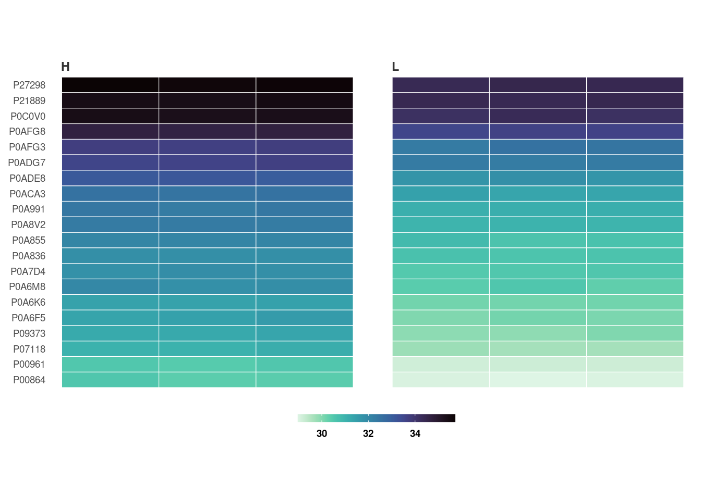

Proteomics data analysis: no technical replicates)
Chathurani Ranathunge
Source:vignettes/promor_no_techreps.Rmd
promor_no_techreps.RmdIntroduction
This tutorial shows how you can use promor to analyse
label-free quantification (LFQ) proteomics data that do
NOT contain technical replicates.
We recommend that you first go through the simple working example
provided in Introduction to promor to get acquainted
with promor's functionality.
vignette("intro_to_promor")A tutorial for proteomics data containing technical replicates is provided here: promor: Technical replicates
For this tutorial we will be using a previously published data set
from Cox
et al. (2014).
Workflow
 Figure 1. A
schematic diagram highlighting the suggested promor workflow for
proteomics data without technical replicates
Figure 1. A
schematic diagram highlighting the suggested promor workflow for
proteomics data without technical replicates
You can access the help pages for functions shown above and
more using ?function_name
Input data
To run promor, you need:
- A proteinGroups.txt file produced by MaxQuant or a standard input file containing a quantitative matrix of protein intensities.
- An expDesign.txt file that contains the experimental design.
proteinGroups.txt is one of the output files
generated by MaxQuant program. It is a tab-delimited file that
contains information on identified proteins from your peptide data. More
information on its contents can be found in MaxQuant
Documentation.
Standard input file should be a tab-delimited text
file. Proteins or protein groups should be indicated by rows and samples
by columns. Protein names should be listed in the first column and you
may use a column name of your choice for the first column. The remaining
sample column names should match the sample names indicated by the
mq_label column in the expDesign.txt file.
expDesign.txt file is a tab-delimited text file that
contains the design of your experiment. Note that you will have to
create and provide this file when you run promor with your
own data. Let’s take a look at the sample expDesign.txt file
that we will be using for this tutorial.
# Load promor
library(promor)
#> The legacy packages maptools, rgdal, and rgeos, underpinning the sp package,
#> which was just loaded, will retire in October 2023.
#> Please refer to R-spatial evolution reports for details, especially
#> https://r-spatial.org/r/2023/05/15/evolution4.html.
#> It may be desirable to make the sf package available;
#> package maintainers should consider adding sf to Suggests:.
#> The sp package is now running under evolution status 2
#> (status 2 uses the sf package in place of rgdal)
# Let's load the expDesign.txt file
exp_design <- read.csv("https://raw.githubusercontent.com/caranathunge/promor_example_data/main/ed1.txt", sep = "\t")
# Take a peek inside the file
head(exp_design)mq_label is the sample label that you provided when running MaxQuant. You can easily find them in your proteinGroups.txt file. Hint: In LFQ intensity columns, the term “LFQ intensity” is immediately followed by the label you provided when running MaxQuant. This is your mq_label. If you are using a standard input file instead of a proteinGroups.txt file, mq_label should match the column headers of the sample columns.
condition is the condition or group that your samples belong to. In this example “H” refers to HeLa cells, and “L” refers to E. coli cells.
sample_ID is a unique identifier for each sample.
tech_rep is a number denoting the technical replicate number. In this example, there are no technical replicates, so the column is left blank.
1. Create a raw_df object
Let’s first create a raw_df object with the input files. Here we are using a proteinGroups.txt file and an expDesign.txt file. The default intensity data type to use is “LFQ”, so LFQ intensity columns are extracted from the proteinGroups.txt file.
# Create a raw_df object with default settings.
raw <- create_df(
prot_groups = "https://raw.githubusercontent.com/caranathunge/promor_example_data/main/pg1.txt",
exp_design = "https://raw.githubusercontent.com/caranathunge/promor_example_data/main/ed1.txt"
)
#> 0 empty row(s) removed.
#> 0 empty column(s) removed.
#> 80 protein(s) (rows) only identified by site removed.
#> 65 reverse protein(s) (rows) removed.
#> 42 protein potential contaminant(s) (rows) removed.
#> 1923 protein(s) identified by 2 or fewer unique peptides removed.
#> Zeros have been replaced with NAs.
#> Data have been log-transformed.
# We can quickly check the dimensions of the data frame
dim(raw)
#> [1] 4584 6Instead of using LFQ intensity values, you can choose to extract other data types such as iBAQ from the proteinGroups.txt file as follows:
# Create a raw_df object of ibaq values
raw_1 <- create_df(
prot_groups = "https://raw.githubusercontent.com/caranathunge/promor_example_data/main/pg1.txt",
exp_design = "https://raw.githubusercontent.com/caranathunge/promor_example_data/main/ed1.txt",
data_type = "iBAQ"
)
#> 0 empty row(s) removed.
#> 0 empty column(s) removed.
#> 80 protein(s) (rows) only identified by site removed.
#> 65 reverse protein(s) (rows) removed.
#> 42 protein potential contaminant(s) (rows) removed.
#> 1923 protein(s) identified by 2 or fewer unique peptides removed.
#> Zeros have been replaced with NAs.
#> Data have been log-transformed.
# We can quickly check the first five rows of the data frame
head(raw_1)Instead of using a proteinGroups.txt file, you can choose to use a standard input file containing a quantitative matrix of protein intensities.
# Create a raw_df object using a standard input file.
raw_2 <- create_df(
prot_groups = "https://raw.githubusercontent.com/caranathunge/promor_example_data/main/st.txt",
exp_design = "https://raw.githubusercontent.com/caranathunge/promor_example_data/main/ed1.txt",
input_type = "standard"
)
#> 0 empty row(s) removed.
#> 0 empty column(s) removed.
#> Zeros have been replaced with NAs.
#> Data have been log-transformed.
#check the first five rows of the data frame
head(raw_2)If you ran create_df with default settings using either
type of input files, now your raw_df object contains log2
transformed protein intensity values. Run ?create_df for
more information on available arguments.
2. Filter proteins by groupwise missing data
Next, we will remove proteins if they have more than 0.4% (default is 0.33%) missing data in either group (We will be using the raw_df object that we created with the default settings as input).
# Filter out proteins with high levels of missing data in either condition
raw_filtered <- filterbygroup_na(raw, set_na = 0.4)
#> 224 proteins with higher than 40% NAs in at least one group removed.
# We can check the dimensions of the new data frame. Note that the number of rows have changed.
dim(raw_filtered)
#> [1] 4360 63. Visualize missing data
Now, we are going to see how missing data is distributed in the data. This will help us make an informed decision on how to impute missing data in the next step.
# Visualize missing data in a subset of proteins.
heatmap_na(raw_filtered, palette = "mako")
Note that your proteins are alphabetically ordered by default, but if you would rather order them by the mean intensity to check if proteins with low intensities are more likely to have missing data, you can do the following:
# Order proteins by mean intensity.
heatmap_na(raw_filtered, reorder_y = TRUE, palette = "mako")
For larger data sets, you can choose to visualize subsets of the data
# Visualize missing data in a subset of proteins.
heatmap_na(raw_filtered, protein_range = 40:70, label_proteins = TRUE, palette = "mako")
4. Impute missing data
promor provides multiple missing data imputation methods.
Default is minProb, which assumes that all missing data is
MNAR (Missing Not at Random) type or left-censored missing values, and
imputes them by random draws from a Gaussian distribution centered at a
minimal value. More information about available imputation methods can
be found in Lazar et
al. (2016).
# Impute missing data with minProb method. Don't forget to fix the random seed for reproducibility.
imp_df_mp <- impute_na(raw_filtered, seed = 327)Alternatively, we can use a different imputation method as follows.
# Impute missing data with minDet method. Don't forget to fix the random seed for reproducibility.
imp_df_md <- impute_na(raw_filtered, method = "minDet", seed = 327)Note: Some missing data imputation methods such as ‘kNN’ require that the data is normalized prior to imputation.
5. Visualize imputed data
We can now visualize the impact of imputation on the data set. Lets
check the data imputed with minProb method.
# Visualize the imputed data with sample-wise density plots.
impute_plot(original = raw_filtered, imputed = imp_df_mp, n_row = 3, n_col = 3, palette = "mako")
We can also visualize the impact of imputation on each sample’s
intensity data by setting global = FALSE.
# Visualize the imputed data with sample-wise density plots.
impute_plot(original = raw_filtered, imputed = imp_df_mp, global = FALSE, n_row = 3, n_col = 3, palette = "mako")
It looks like, for most samples, imputation has not changed the
distribution of data by much, which is a good sign.
6. Normalize data
Note: As MaxQuant has already normalized protein intensities using the MaxLFQ algorithm, further normalization may not be necessary for this data set. Steps 6 and 7 are performed for visualization purposes only.
To normalize the imputed data with the default quantile
method:
norm_df <- normalize_data(imp_df_mp)7. Visualize normalized data
Let’s check the results from quantile normalization.
norm_plot(original = imp_df_mp, normalized = norm_df, palette = "mako")
For samples that show very little variability among them, such as
those in this data set, it may be difficult to visualize the effect of
normalization with boxplots (Remember, this data set had been already
normalized with the MaxLFQ algorithm within the MaxQuant program). Let’s
use type = "density to visualize the effect of
normalization with density plots instead.
norm_plot(original = imp_df_mp, normalized = norm_df, type = "density", palette = "mako")
8. Identify differentially expressed proteins
We will be using the non-normalized imp_df object we
created in Step 4 to perform differential expression
analysis.
fit_df <- find_dep(imp_df_mp)
#> 1294 siginificantly differentially expressed proteins found.You can also choose to save the top 10 hits in a text file as follows:
fit_df <- find_dep(imp_df_mp, save_tophits = TRUE, n_top = 10)9. Generate a volcano plot
Let’s visualize the results from Step 8 using a volcano plot.
volcano_plot(fit_df,
text_size = 5,
palette = "mako"
)
10. Create a heatmap of differentially expressed proteins
heatmap_de(fit_df, imp_df_mp, palette = "mako")
Save a copy of the plot in the working directory.
heatmap_de(fit_df, imp_df_mp, palette = "mako", save = TRUE, file_path = ".")